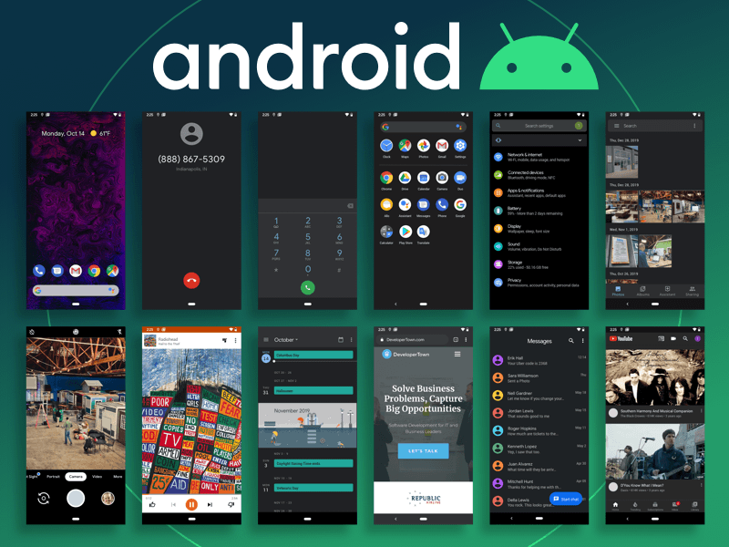

An operating system (OS) is system software that manages computer hardware, software resources, and provides common services for computer programs. Time-sharing operating systems schedule tasks for efficient use of the system and may also include accounting software for cost allocation of processor time, mass storage, printing, and other resources. For hardware functions such as input and output and memory allocation, the operating system acts as an intermediary between programs and the computer hardware, [1][2] although the application code is usually executed directly by the hardware and frequently makes system calls to an OS function or is interrupted by it. Operating systems are found on many devices that contain a computer – from cellular phones and video game consoles to web servers and supercomputers. The dominant general-purpose[3] desktop operating system is Microsoft Windows with a market share of around 76.45%. macOS by Apple Inc. is in second place (17.72%), and the varieties of Linux are collectively in third place (1.73%).[4] In the mobile sector (including smartphones and tablets), Android's share is up to 72% in the year 2020.[5] According to third quarter 2016 data, Android's share on smartphones is dominant with 87.5 percent with also a growth rate of 10.3 percent per year, followed by Apple's iOS with 12.1 percent with per year decrease in market share of 5.2 percent, while other operating systems amount to just 0.3 percent.[6] Linux distributions are dominant in the server and supercomputing sectors. Other specialized classes of operating systems (special-purpose operating systems)[3][7]), such as embedded and real-time systems, exist for many applications. Security-focused operating systems also exist. Some operating systems have low system requirements (e.g. light-weight Linux distribution). Others may have higher system requirements.
A single-tasking system can only run one program at a time, while a multi-tasking operating system allows more than one program to be running in concurrency. This is achieved by time-sharing, where the available processor time is divided between multiple processes. These processes are each interrupted repeatedly in time slices by a task-scheduling subsystem of the operating system. Multi-tasking may be characterized in preemptive and co-operative types. In preemptive multitasking, the operating system slices the CPU time and dedicates a slot to each of the programs. Unix-like operating systems, such as Solaris and Linux—as well as non-Unix-like, such as AmigaOS—support preemptive multitasking. Cooperative multitasking is achieved by relying on each process to provide time to the other processes in a defined manner. 16-bit versions of Microsoft Windows used cooperative multi-tasking; 32-bit versions of both Windows NT and Win9x used preemptive multi-tasking.
Single-user operating systems have no facilities to distinguish users, but may allow multiple programs to run in tandem.[8] A multi-user operating system extends the basic concept of multi-tasking with facilities that identify processes and resources, such as disk space, belonging to multiple users, and the system permits multiple users to interact with the system at the same time. Time-sharing operating systems schedule tasks for efficient use of the system and may also include accounting software for cost allocation of processor time, mass storage, printing, and other resources to multiple users.
A distributed operating system manages a group of distinct, networked computers and makes them appear to be a single computer, as all computations are distributed (divided amongst the constituent computers).
In the distributed and cloud computing context of an OS, templating refers to creating a single virtual machine image as a guest operating system, then saving it as a tool for multiple running virtual machines. The technique is used both in virtualization and cloud computing management, and is common in large server warehouses
Embedded operating systems are designed to be used in embedded computer systems. They are designed to operate on small machines with less autonomy (e.g. PDAs). They are very compact and extremely efficient by design, and are able to operate with a limited amount of resources. Windows CE and Minix 3 are some examples of embedded operating systems.
A real-time operating system is an operating system that guarantees to process events or data by a specific moment in time. A real-time operating system may be single- or multi-tasking, but when multitasking, it uses specialized scheduling algorithms so that a deterministic nature of behavior is achieved. Such an event-driven system switches between tasks based on their priorities or external events, whereas time-sharing operating systems switch tasks based on clock interrupts.

| Operating system | symbol | link | GUI |
|---|---|---|---|
| Microsoft Windows | |
Microsoft Windows | |
| macOs | |
macOs | |
| Linux | Linux | |
|
| Android | |
Android |  |